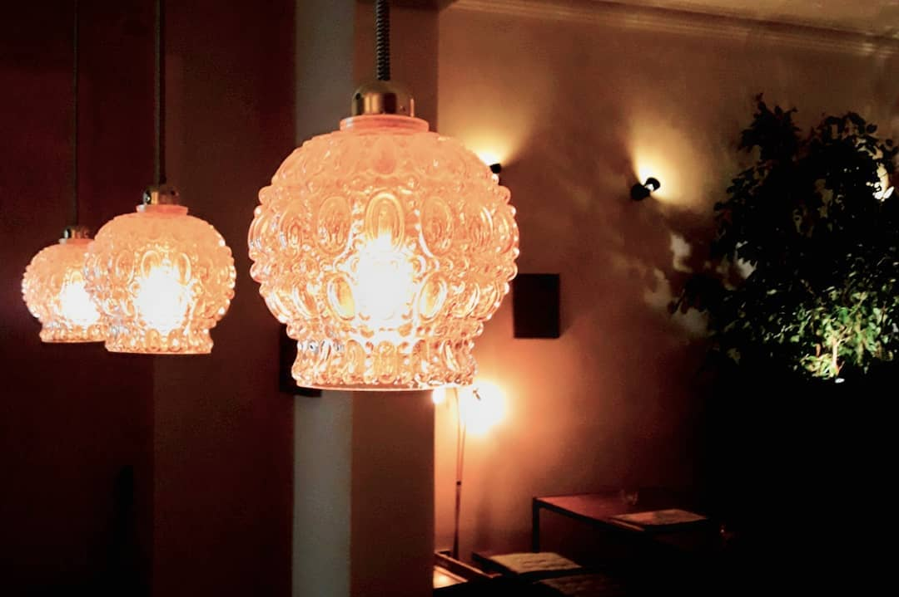
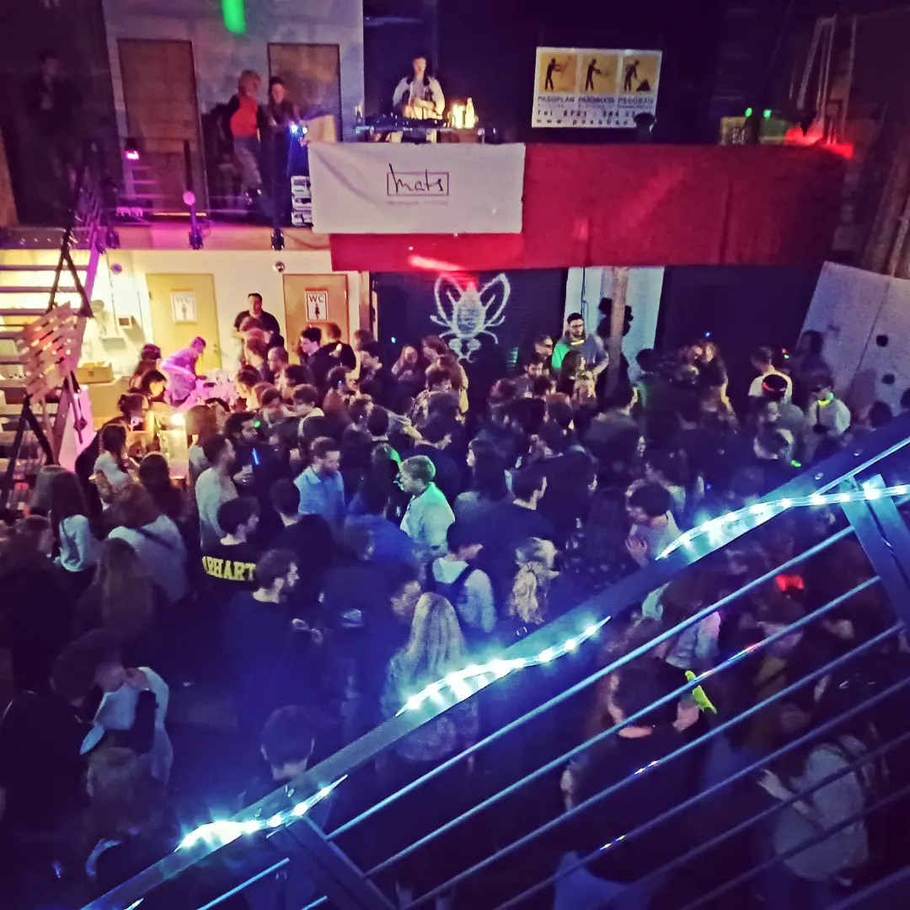
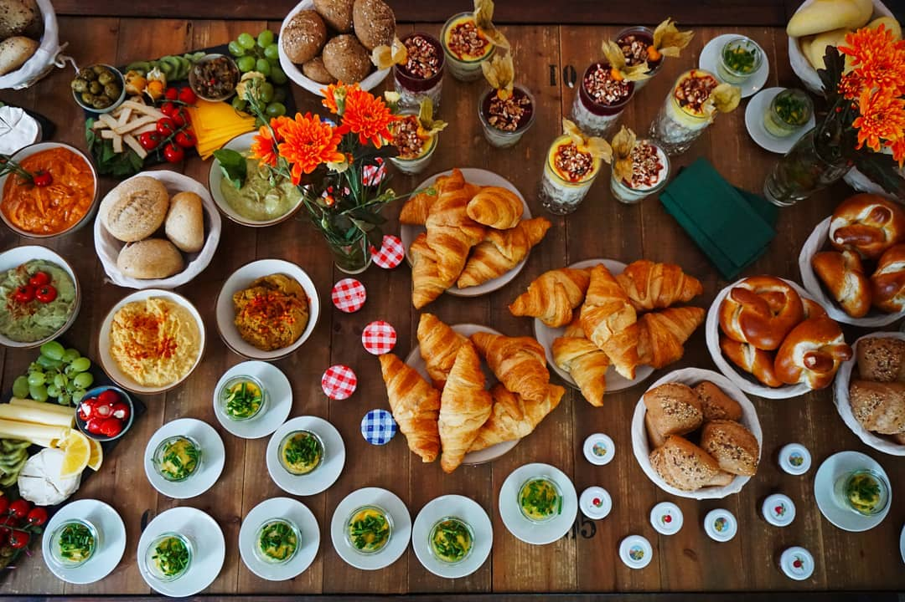
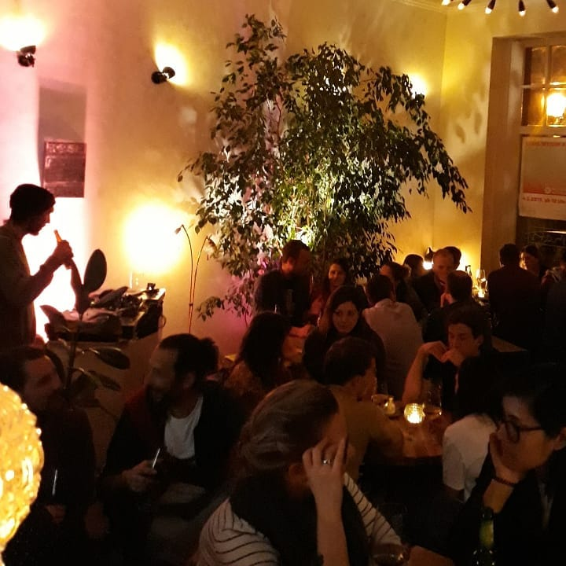
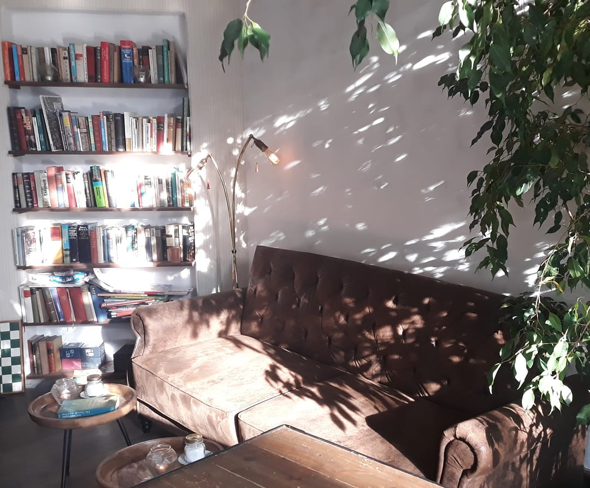
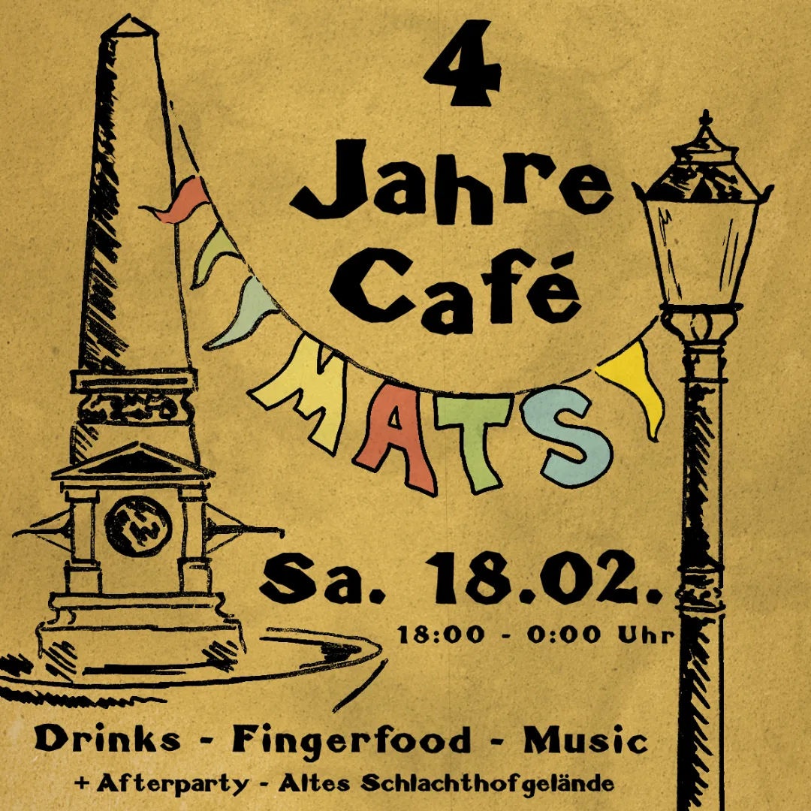
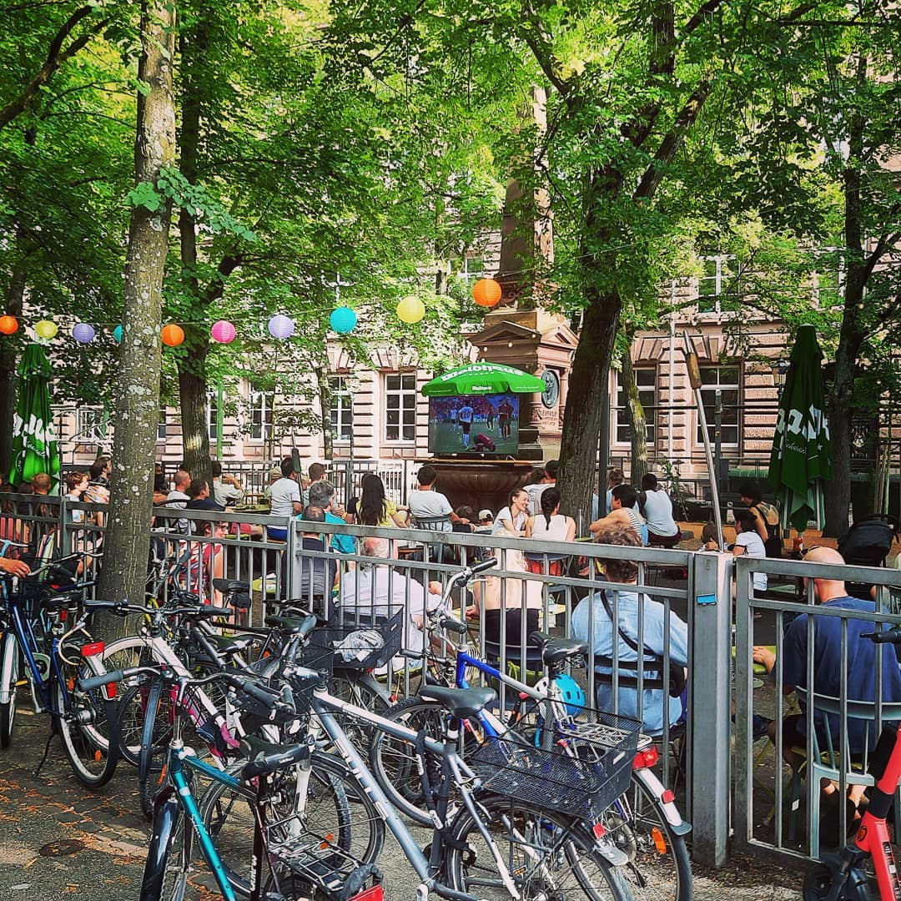
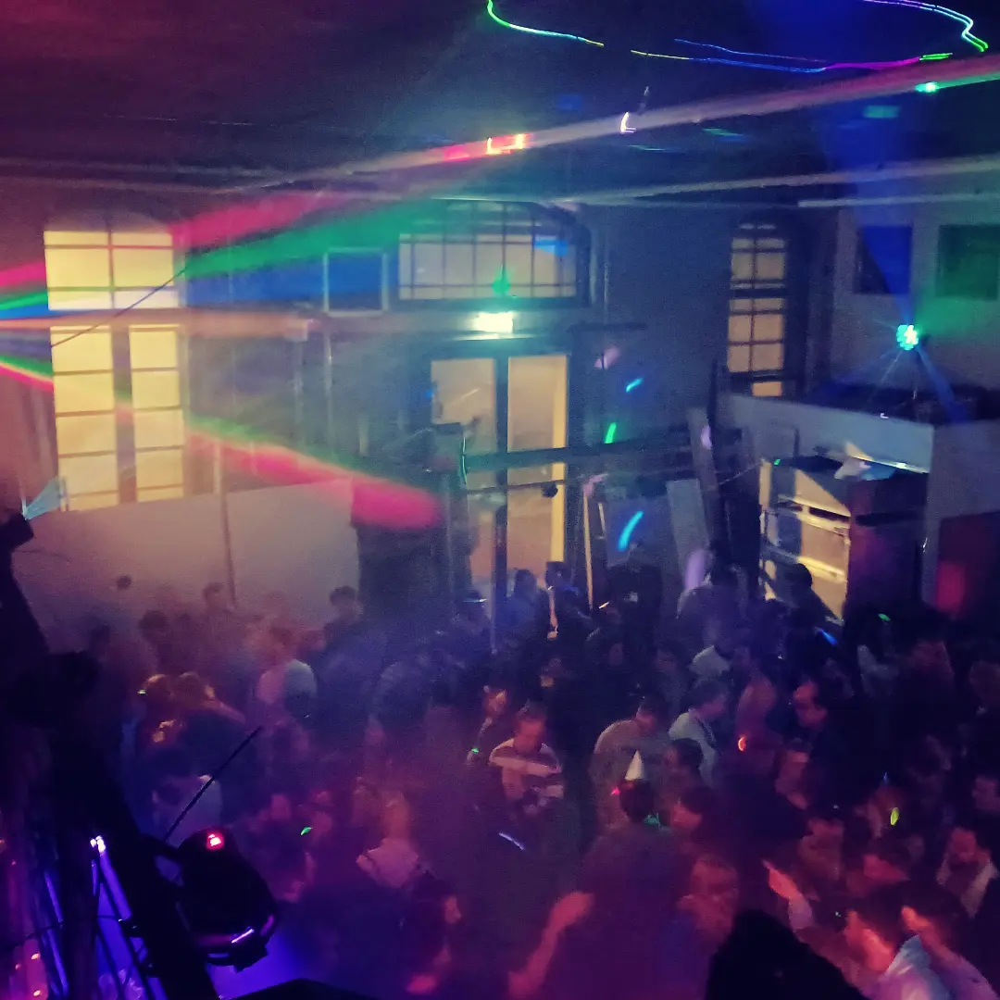
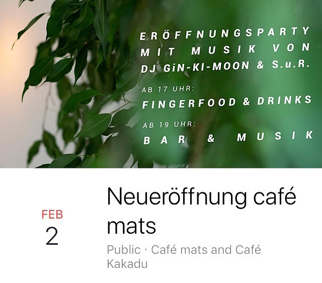
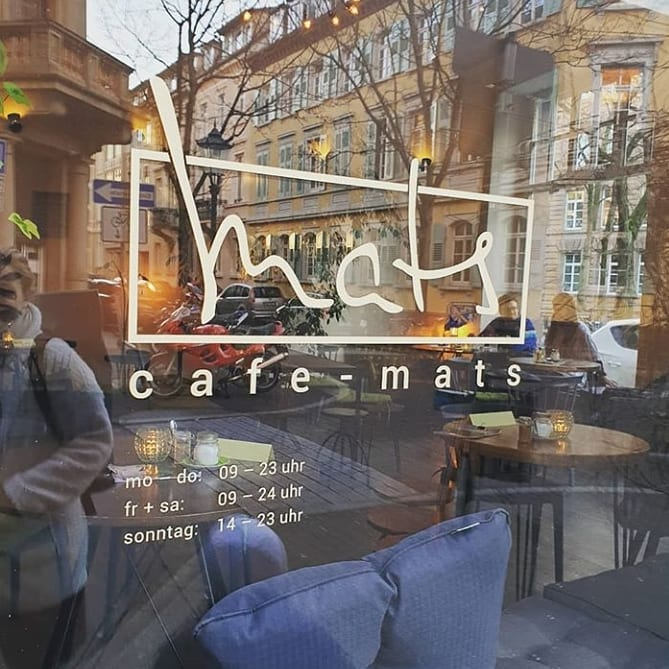

Tagsüber
Espresso, Flat White, hausgemachte Kuchen und ein heller Lesebereich mit Sofa und Büchern.
Karlsruhe since 2019
Ein lebendiges Nachbarschaftscafé zwischen ruhigem Tageslicht, warmen Abenden und lauten Nächten mit Musik.



Espresso, Flat White, hausgemachte Kuchen und ein heller Lesebereich mit Sofa und Büchern.
Grosse bunte Tafeln mit Croissants, Dips, Brot, saisonalen Zutaten und hausgemachten Kleinigkeiten.
DJ-Sets, kleine Clubnächte und Community Events in einem intimen, urbanen Setting.
Instagram Vibe







Regelmäßige Events
Von DJ-Abenden bis Community-Abenden: Mats ist mehr als ein Café. Folge den aktuellen Programmen auf Instagram.
Zu InstagramBesuch uns
Ruhige Café-Atmosphäre am Tag, lebendige Stimmung am Abend. Drinnen und draußen mit viel Grün.
Mo-Fr11:00-24:00 Uhr
Sa-So14:00-24:00 Uhr